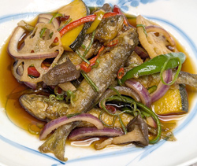

小鮎と夏野菜の南蛮漬け
- 調理時間： 40分
- （一人当たり）
- カロリー：635kcal
- たんぱく質：22.0g
- 脂質：27.8g
- 炭水化物：71.4g
- 塩分：2.5g


＜材料（2～3人分）＞
- 小鮎
- 10尾
- 片栗粉
- 適量
- 揚げ油
- 適量
- 青ネギ（小口切り）
- 適量
- ・紫玉ねぎ
（皮をむいてくし切り） - 1/2玉
- ・カラーピーマン
（種をとって1㎝幅に切る） - 60g
- ・しめじ
（石づきを取り、手でほぐす） - 40g
- ・カボチャ
（種を取り、薄切り） - 80g
- ・レンコン（輪切りにする）
- 50g
- ・穀物酢
- 1カップ
- ・砂糖
- 80g
- ・だし汁
- 60ml
- ・食塩
- 小さじ1/3
- ・赤唐辛子
- お好みで
- ・醤油
- 大さじ1と1/3
A
B


- Aの野菜を下準備しておく。（切り方を参考に切っておく）
- 小鮎は塩水でよく洗い、キッチンペーパで水気を拭いておく。
- 小鍋にBの材料を合わせ、火にかけて、砂糖をしっかり溶かしておく。
- ②の小鮎に片栗粉をまぶし、熱した油で小鮎をからりと揚げるＡの野菜も素揚げする。
- 揚げた小鮎と素揚げした野菜を③のタレにくぐらせる。
- 器に盛り付け、残りのタレと小口ネギをたっぷり盛り付けて完成
※冷蔵庫で冷やしてもおいしくいただけます。
小鮎と夏野菜の南蛮漬け
綺麗な水を好むことから「清流の女王」と称される鮎。天然の鮎の寿命は１年と短いことから「年魚」と呼ばれたり、鮎の身からスイカの香りが漂うことから「香魚」と呼ばれることもあります。季節の味わいから、日本人に愛され続けている魚です。鮎は、稚魚、若鮎（小鮎）、成魚、落ち鮎など、成長過程で様々な料理が楽しめるのも魅力です。６月から７月に獲れる若鮎は、こぶりでやわらかく丸ごと食べるのに最適。時期に変わる天然鮎の醍醐味をいただきましょう。